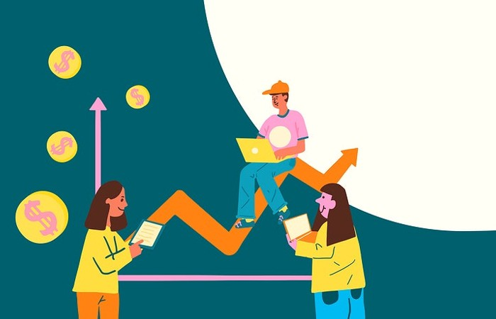

Somos una empresa especializada en economía que se dedica a brindar soluciones financieras a las personas y familias. Sabemos que el dinero es una preocupación constante para muchas personas, y es por eso que nos enfocamos en ayudar a las personas a tomar decisiones informadas y estratégicas en cuanto a sus finanzas personales. Queremos que nuestros clientes tengan acceso a información clara y concisa sobre temas financieros, para que puedan tomar decisiones informadas y mejorar su calidad de vida.
Para nosotros, la transparencia, la honestidad y la ética son valores fundamentales que guían todo lo que hacemos. Creemos que la confianza es la base de cualquier relación sólida y duradera, y por eso trabajamos arduamente para ganarnos la confianza de nuestros clientes.
Estamos comprometidos en proporcionar recursos y herramientas educativas para ayudar a las personas a mejorar su conocimiento financiero. Entendemos que la educación financiera es esencial para la toma de decisiones informadas y queremos asegurarnos de que nuestros clientes tengan acceso a la información necesaria para tomar decisiones informadas en cuanto a sus finanzas.
Aunque también brindamos soluciones financieras a las empresas, nuestro enfoque principal es ayudar a las personas a mejorar su situación financiera. Nos enfocamos en ayudar a nuestros clientes a alcanzar sus objetivos financieros a largo plazo, y estamos comprometidos en brindar un servicio excepcional y personalizado a cada uno de nuestros clientes.
Nuestra motivación es ayudar a las personas a aliviar el estrés y la ansiedad que puede venir con los problemas financieros. Creemos que todo el mundo merece una vida financiera saludable, independientemente de su situación actual. Queremos ser un socio confiable y de apoyo para nuestros clientes en su viaje hacia la estabilidad financiera, y estamos comprometidos en hacer nuestra parte para ayudar a que eso suceda.
Estamos muy orgullosos de ofrecer nuestro curso completo y detallado sobre Finanzas Personales en nuestra página web. Este curso está diseñado específicamente para ayudar a las personas a mejorar su situación financiera y tomar decisiones informadas y estratégicas en cuanto a sus finanzas personales.
El curso está dividido en cuatro secciones que están estructuradas de manera clara y fácil de entender. En la primera sección, "¿Qué son las finanzas personales y por dónde empezar?", nuestros clientes aprenderán los conceptos básicos de las finanzas personales y descubrirán cómo pueden comenzar a tomar el control de sus finanzas.
En la segunda sección, "Evaluar nuestra situación financiera personal", nuestros clientes aprenderán cómo evaluar su situación financiera actual y descubrirán las áreas que necesitan trabajar para mejorar su situación financiera. Esta sección es importante ya que muchos de nuestros clientes no tienen una buena comprensión de su situación financiera actual y necesitan ayuda para identificar las áreas en las que pueden mejorar.
En la tercera sección, "Cómo crear nuestro propio Plan Financiero", nuestros clientes aprenderán cómo crear un plan financiero personalizado que se adapte a sus necesidades y objetivos financieros específicos. Esta sección es fundamental ya que un plan financiero sólido es esencial para alcanzar la estabilidad financiera a largo plazo.
Por último, en la sección "Estrategias para cumplir con nuestro Plan Financiero", nuestros clientes aprenderán estrategias prácticas para ayudarles a cumplir con su plan financiero y alcanzar sus objetivos financieros. Esta sección es muy útil ya que muchas personas luchan por mantenerse en el camino correcto y necesitan estrategias efectivas para ayudarles a mantenerse enfocados y motivados.
Estamos convencidos de que nuestro curso de Finanzas Personales es una herramienta valiosa para cualquier persona que busque mejorar su situación financiera. Está diseñado de manera clara y fácil de entender, y está lleno de información útil y práctica que los clientes pueden aplicar en su vida diaria. Si estás buscando mejorar tu situación financiera, ¡nuestro curso de Finanzas Personales es para ti!
En nuestra empresa, la ética es una parte fundamental de todo lo que hacemos. Nos comprometemos a mantener los más altos estándares éticos en todas nuestras operaciones y transacciones comerciales. Algunos de los códigos de ética que tenemos incluyen la integridad, la honestidad y la transparencia en todas nuestras relaciones comerciales.
Nuestra misión es brindar soluciones financieras a las personas y empresas, para que puedan alcanzar la estabilidad financiera que desean. Nos enfocamos en ofrecer servicios personalizados y educación financiera a nuestros clientes para ayudarles a tomar decisiones informadas y estratégicas en cuanto a sus finanzas.
Por otro lado, nuestra visión es ser líderes en el mercado de soluciones financieras, ofreciendo soluciones personalizadas y de alta calidad a nuestros clientes. Queremos ser reconocidos por nuestra ética y transparencia, y por nuestro compromiso en mejorar la educación financiera de las personas. Estamos comprometidos en mejorar la calidad de vida de nuestros clientes y ser una empresa de confianza y apoyo en su camino hacia la estabilidad financiera.
